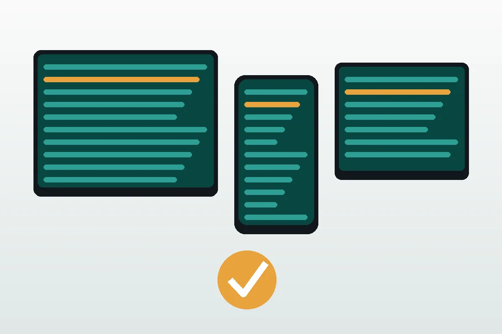
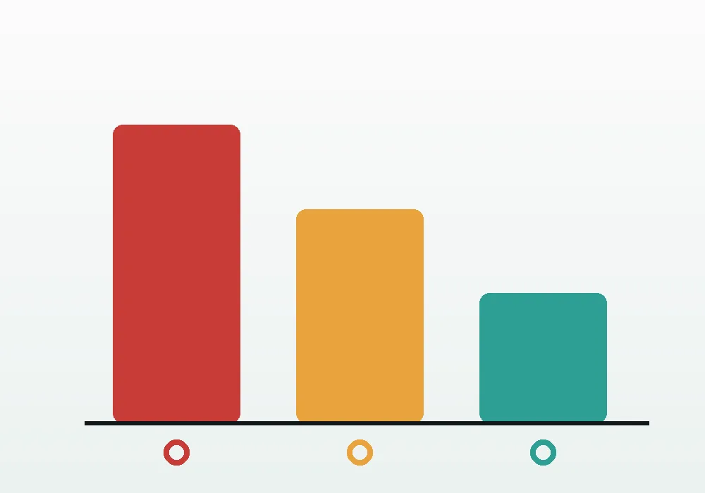

Platform templates
Start from a ready-made checklist for the platform you are testing, then tailor it to the feature in front of you.
QA workflow tool
Checkpoint QA turns scattered test notes into a structured, repeatable checklist. Pick a platform template, mark each check pass or fail, and watch your coverage scorecard update in real time — right in the browser, with your progress saved on your device.
Why it exists
When a feature ships to web, iOS, tvOS, Android, Android TV, and Roku, every platform needs its own pass — with the same rigor and the same priorities. Checkpoint QA gives each run a shared structure so nothing slips between devices.
Start from a ready-made checklist for the platform you are testing, then tailor it to the feature in front of you.
Pass, fail, blocked, and percent-tested totals recalculate the moment you update a check.
A failing priority-1 check raises a blocker banner so a non-shippable build never hides in the list.

Built for real test runs
Each template carries priority levels so the most important checks stay visible. Filter by status to focus on what failed, add custom checks for edge cases, and copy a clean summary into your bug tracker when the run is done.

Priorities that mean something
Priority 1 checks are the ones that stop a ship. Priority 2 covers important-but-recoverable behavior, and priority 3 is polish. Checkpoint QA keeps those levels front and center so triage decisions are obvious.